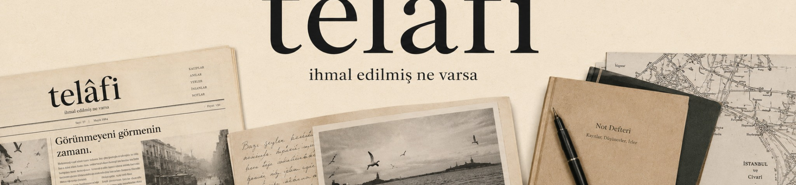
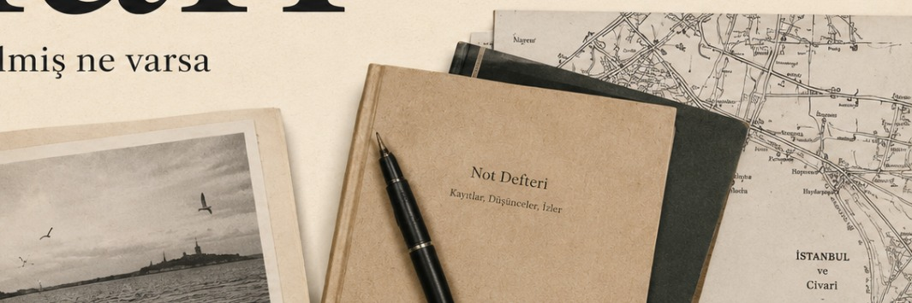

KURULUŞ YAZISI
Bir şey gözden kaçmışsa, oradan başlamaya değer.
Telâfi; günün gürültüsüne bir haber daha eklemek için değil, konuşulmuş sayılan meseleleri yeniden açmak için kuruluyor.
İhmal edilmiş ne varsa.

KURULUŞ YAZISI
Telâfi; günün gürültüsüne bir haber daha eklemek için değil, konuşulmuş sayılan meseleleri yeniden açmak için kuruluyor.
Bir şeyin görünür olması, görüldüğü anlamına gelmez.
TOPLUM
Taşra, göç ve hafıza üzerine; bir yerin yalnızca coğrafi olarak değil, düşünsel olarak da merkezin dışında bırakılması.
FİKİR
TARİH
EDEBİYAT
İHMAL EDİLMİŞ COĞRAFYALAR
Sınırlar, taşralar, küçük şehirler ve kaybolmuş merkezler üzerine uzun soluklu bir dosya.
DOSYAYI AÇ →
Görsel çerçevenin görünmez kıldıkları.
4 DKDil ve hafızanın küçük siyaseti.
5 DKBelgenin duygusu, tarihin tonu.
6 DKTELÂFİ NEDİR?
Telâfi, yanlış sorulmuş sorulara yeniden dönmek, üzerinde fazla çabuk mutabakata varılmış meseleleri yeniden açmak ve görünmezleşmiş tekil hayatları yeniden düşünmek için kuruluyor.
Bir ideolojinin yayın organı değiliz; fakat yönsüz de değiliz. Düşünce özgürlüğünü, entelektüel dürüstlüğü ve tarihsel merakı ciddiye alıyoruz.